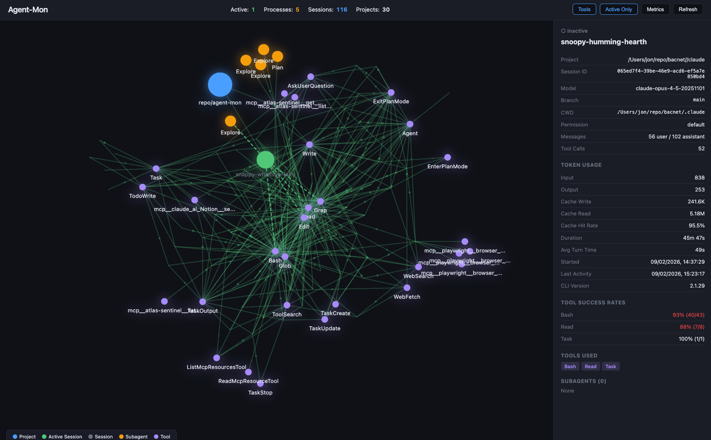
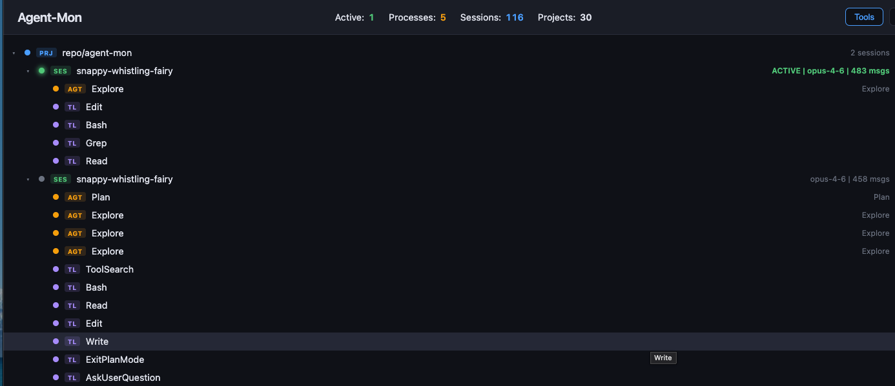

Real-time monitoring dashboard that visualizes every session, subagent, tool call, and token flowing through your Claude Code environment.
$ git clone && npm install && npm start


Monitor every aspect of your Claude Code sessions in real time
Interactive D3 visualization showing projects, sessions, subagents, and tools as connected nodes. Active sessions pulse green.
Collapsible hierarchy view. Browse projects, sessions, subagents, and tools in a familiar tree structure with active-first sorting.
Aggregate token usage, tool reliability rates, stop reason distribution, model usage, and file access patterns across all sessions.
File watcher and Server-Sent Events push changes instantly. See new sessions, tool calls, and subagent spawns as they happen.
Nodes connected to active sessions glow with color-coded pulses. Flowing particles travel along active edges showing data flow.
Dark, Light, and Claude Code themes. Preference persists across sessions. All animations and colors adapt to each theme.
Every session detail at a glance, extracted straight from JSONL logs
Clone the repo and install dependencies
npm install
Launch the server on localhost
npm start
Open the dashboard and watch your agents
localhost:3000